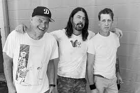
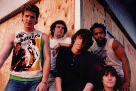
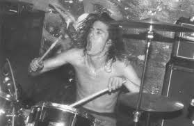

Dave joined his first officail band "Scream" in 1986, at the time he was only 17. He dropped out of his junior year of highschool to be with with the band. He had only ever played in a band with his highschool friends at this point.

He was excited to see the world and began touring to many different countries. He played the drums and recorded one live album and two other where he also sang vocals on the albums "No More Censorship" and "Fumble".

Home
Sadly, the band seperated after the sudden departure of their bass player Skeeter Thompson during their last tour of the United States. This left Dave momentarily without a band.